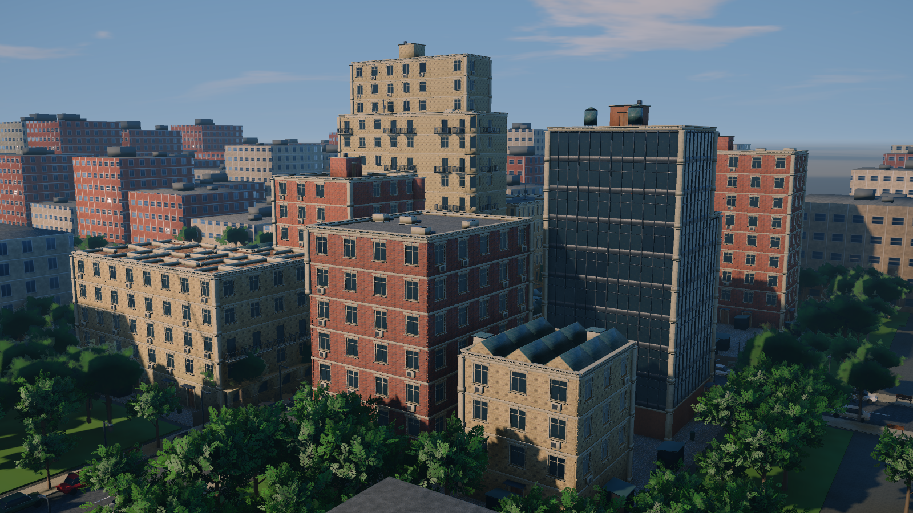
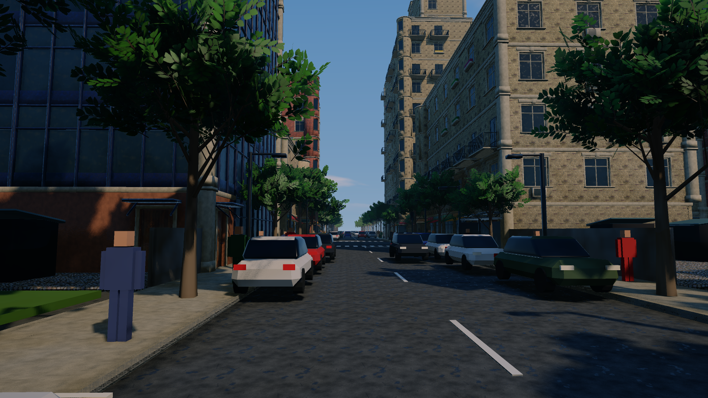
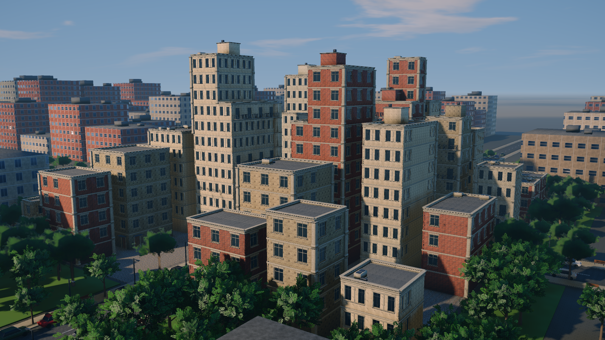
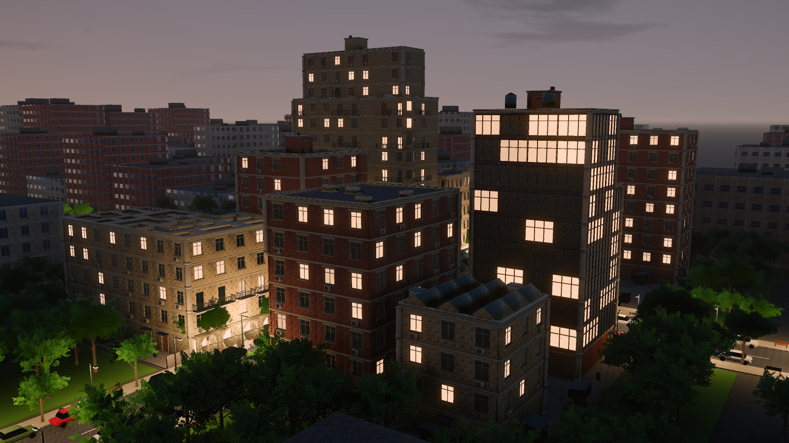

Modular city#
Modular buildings: first a kit of facade and roof pieces (each 4 m wide, one storey = 3.5 m), then rules that place the kit onto the facades and roofs of twelve buildings along two crossing streets. The deliverable is the kit meshes plus an instance table, not one merged building mesh. The preview dresses the block as a street scene (curbs and paving, road paint, lane trees with leaf cards, lamps, benches, bus shelters, traffic lights, parked cars, low-detail context blocks to the horizon), weathers the facades per building, and shoots it with two cameras in the Outdoor look, plus the aerial at dusk with the windows and lamps lit. A copy of the block is also written as a world that the engine importers read.




Load it#
Drag example_workflows/pcg_prod_modular_city.json onto the ComfyUI canvas and press Queue. Only comfyui_pcg nodes plus ComfyUI's Preview Image are used. Run the material library first if you want the kit to open with textures (see below).
The working nodes open collapsed (their titles say what each does; double-click a title, or select nodes and press Alt+C, to open them): hundreds of open nodes, each code box a DOM element the frontend repositions on every frame, make the canvas slow to pan. Previews, viewports and notes stay open. After restarting ComfyUI, reload the browser page too (Ctrl+F5): a page left open keeps the node list of the server it first loaded, and nodes added since show as missing.
Output, in output/pcg/assets/kit/:
| File | Content |
|---|---|
SM_Kit_<piece>.glb | One glb per kit piece, with three nodes: SM_Kit_<piece>_LOD0, _LOD1 and the collision hull UCX_SM_Kit_<piece>_00. |
SM_Kit_<piece>.lods.json | Its LOD manifest: the switch distance (LOD1 at 40 m), Unreal screen sizes, Unity LODGroup transitions, the collision node. |
Block_Instances.csv | One row per placed piece. The asset column is the kit glb's file name without extension; the extra columns bld (building), floor and facade (the building's facade variant: 0 red brick, 1 buff brick, 2 painted render, 3 modern (concrete), for an engine-side material override of M_Wall) are included. |
And in output/pcg/city/, the same block as a world: World.json, the kit glbs in assets/, instances/Instances_x0_y0.csv (the block in the middle of one 1024 m tile whose origin is its north-west corner) and tiles/Tile_x0_y0.json. See Engine import.
The kit (left four columns)#
Pieces: Wall_Plain, Wall_Window, Wall_WindowPair, Wall_Door, Wall_Shopfront, Wall_Balcony, Corner_Pillar, Roof_Cornice, Roof_Flat, and the rooftop plant Roof_Unit (a condenser with two fans and a duct) and Roof_Tank (a water tank with a conical lid on four legs), Wall_Curtain (a storey of glazing over a metal spandrel, for the modern facade), Wall_Arcade (a round-arched front 1.5 m out on its own piers, the shop window in the wall behind), Prop_ACUnit (an air-conditioning unit on brackets, hung on back walls), the pitched-roof set Roof_Gable (4 m of a gable roof, the ridge along X), Roof_GableEnd (the brick triangle at a row's end) and Roof_Dormer, Roof_Deck (timber decking with planters) and Roof_Antenna, Corner_Bay, a round bay (a rendered drum with a window, a sill and the floor band) for the corners on the crossing, and Roof_Penthouse, a stair and lift core (rendered walls, a door, an overhanging slab, a vent) for the roofs of tall buildings.
Conventions:
- The pivot is at the centre of the bottom edge (rooftop plant: on the roof surface); the outer facade faces +Z and the wall thickness goes towards -Z.
- Every face carries a
materialattribute (M_Wall,M_Trim,M_Glass,M_Door,M_Metal,M_Roof,M_RoofFlat,M_Sign), exported as glTF material slots. - UVs are a world-scale box projection (1 UV = 1 m), the same density as the material library (one texture = 1 m).
- All slots point by relative path to the material library's textures, so after running the material library the kit opens textured.
How the pieces are built: Box (PCG) parts, openings cut with Boolean (PCG) (subtract). The facade face is z = 0; glass and door leaves sit back at z = -0.2, so every opening has a 20 cm reveal. The window has a stone surround, a lintel with a keystone, a sill and a painted frame with a mullion and a transom; the door has a casing, four raised panels, a handle and a canopy on two diagonal brackets; the balcony door a metal frame, and the balcony a slab, rails, corner posts and 12 cm balusters on three sides (one baluster box copied onto a row of points with Copy to Points (PCG)), 1 m high; the shopfront a stall riser, a metal frame in three bays with a transom, a sloping awning and a sign; the corner pillar a plinth and a capital; the cornice a fascia, a bed moulding, a row of dentils and a crown rounded with PolyBevel (PCG). each part tagged with a material by a Wrangle (PCG), and each piece merged with Merge (PCG) and named (s@name = "Wall_Window" and so on). The library is merged, UV-projected with UV Project (PCG) (box, 1 UV = 1 m), coloured per material for previews, and exported by Export Mesh (PCG) with Split by Attribute name, so each piece becomes its own glb.
LODs and collision. Before the export each piece gets an asset (SM_Kit_<piece>, the glb's name). LOD Create (PCG) makes the chain with the stripped piece as a custom level: LOD1 is the piece without its faces under 0.1 m² (Measure (PCG) area, then Blast), so frames, mullions, rails and dentils go while the outline, the openings and the glass stay, and the silhouette and textures still match at 40 m. A For-Each over the pieces wraps each in a Convex Hull (PCG) named UCX_SM_Kit_<piece>_00, the usual engine collision naming. Export Mesh writes Split Attribute name (the nodes) and File Attribute asset (the files), with LOD Manifest on: one .lods.json beside each glb.
Assembly (right columns)#
- Footprints. Grid (PCG) with 4 m cells; a Wrangle over primitives assigns cells to twelve buildings by rules (L shapes, slabs, a 14-storey tower, small houses, from a table in the generator) and gives each a floor count from 3 to 14 and a facade variant. Every cell also gets a road class (
road: 1 the main street, 2 the side street, 3 a secondary street, 4 a lane). Its spare parameters switch to a generated block: Layout 1 cuts each quarter into lots along both streets (3 to 5 cells, 12-20 m, of frontage, 3 or 4 deep, the last cell of each lot a 4 m lane so no two buildings share a wall), builds a lot with the probability Density, makes it taller toward the crossing (Max Floors there, Min Floors at the edge, give or take two) and picks a facade; Seed gives another block. Three quarters of the quarters get a secondary street, two cells wide, right across from the side street to the plot's edge; the lots beyond it front it, so a generated block has three levels of road: the two main streets, the secondary streets, and the lanes behind the lots. Layout 2 is the block the open-world terrain puts in each town: no streets of its own, the cells a road mask covers (ext_road) are its streets and nothing is built whereext_offis set; the whole assembly below works from the cells' road classes, so it follows any street layout. Layout 0, the default, is the table.Setbacks. A second Wrangle, reading the grid as its second input, lowers a tall building's first row of cells along a street (where the building goes on behind it) by Setback Floors (3), for buildings of Setback Min (9) floors or more, so the tower steps back above a lower front; it keeps the full height as
heightfor the rules that go by the building. The outlines are merged in two passes (Divide with a group: the full-height part, then the set-back rows), so each part is extruded to its own height. The streets run along x = 0 and z = 0 (16 m between the facades, 10 m of road). Blast (PCG) keeps the occupied cells and Divide (PCG) (remove shared edges) merges them into outlines. - Slots. PolyExtrude (PCG) extrudes the outlines to the maximum height in 14 storey-high divisions; faces above each building's floor count are removed. Every side face is now a 4 m x 3.5 m slot. Normal (PCG) (on primitives) gives the outward normal, and Extract Centroid (PCG) puts one point at the centre of each slot, carrying
N,floors,bldandfacade. - Rules. A Wrangle decides per slot point, with the street a facade faces found from the point 2 m in front of it (within 8 m of a street axis). The main street (along x) has shopfronts on every ground floor; the side street only within 24 m of the crossing, and further on entrances and windows; the backs get occasional doors. Towers of 9+ floors stand on a two-storey podium: where the ground floor is a shop, so is the first floor. Upper floors use a random number per facade column (so pieces line up vertically) with a few plain walls; every building has one balcony style on its street facades, drawn from its number: none, scattered on even floors, or bands across every column on every third floor. Render facades use the paired windows; the modern facade (variant 3, the 10-floor building in the table) is curtain walls on every floor above its podium, without balconies; the buff-brick buildings put their main-street shops behind an arcade. Secondary streets count as streets (entrances, windows, balconies) but get no shops. A third of the back windows above the ground floor carry an air-conditioning unit (
Prop_ACUnit, 25 cm up the slot, on the facade). A slot whose front cell belongs to the same building and still stands at that floor is inside (where a set-back row meets the rest) and gets no wall: the slot Wrangle reads the grid as its second input. The top-floor slots are copied up one storey asRoof_Cornice. Corner pillars go on the points of sharp edges of the extruded mass (Group Create (PCG) by edge angle, one per storey), kept only where the building turns a corner at that storey (one or three of the four cells round the point standing), one per place; on the outside corners of the crossing aCorner_Baytakes the pillar's place, with the building's number and facade. Roof points are the centres of the footprint cells lifted to the roof height (Roof_Flat); about one roof cell in seven also gets a condenser, and buildings of five floors or more the occasional water tank, turned by quarter turns and nudged inside the cell. Buildings of up to four floors get pitched roofs instead: aRoof_Gableon every cell, the ridge along the building's long axis (from its cells' extent), aRoof_GableEndwherever a row of cells ends along the ridge, and aRoof_Dormeron about half the cells, on the slope toward the nearer street. About half the 5-7 floor buildings have a roof terrace (Roof_Deckon every cell, no plant); a few flat roof cells carry aRoof_Antenna. Buildings of eight floors or more get aRoof_Penthouseon the roof cell nearest their middle (no plant there). - Delivery. All instance points are merged,
assetis set toSM_Kit_<name>, and Export Instances (PCG) writes the CSV. For the engine the points are moved by (512, 0, 512) and written again per 1024 m tile underpcg/city/instances, the kit glbs again underpcg/city/assets, and World Manifest (PCG) reads them back intopcg/city/World.json. - Preview. Copy to Points (PCG) with Piece Attribute
nameplaces the kit back onto the points, carryingfacadeto the primitives; a Wrangle swapsM_WallforM_BrickBufforM_Stuccoper building, as an engine would with a material override. The street scene around it is made in the workflow, not part of the kit:- asphalt carriageways (
Ground_Asphalt) that run on to the horizon, 15 cm below the cobbled quarters (Ground_Cobble) and 3 m concrete sidewalks (M_Trim); dashed centre lines, zebra crossings and stop lines as boxes copied onto a table of points and sizes; - curbs along every sidewalk edge, manhole covers in the carriageways, and the context blocks' slab paved in concrete (the sidewalks' texture, tinted darker) with lighter sidewalks round the blocks;
- street lamps and trees alternating every 6 m along the curbs, and benches, litter bins, bus shelters and traffic lights at the crossing; the trees are a Tree Generator (PCG) broadleaf with leaf cards cut out by Leaf Card Texture (PCG) and lit as translucent (
translucency 0.5), also lining lanes and parks between the context blocks (about 220 more); - weathering per building, on the facades' vertices: a tint drawn from the building's number, grime toward the foot, the glass varied (curtains, dark panes) with some windows lit (
emit, for the dusk shot), and the texture shifted per building so neighbours don't repeat; - parked cars in the parking lanes, about two slots in three, heading with the traffic, in a random paint colour (a bevelled body, a cabin tapered to raked screens with a painted roof, lights, four wheels);
- context blocks: a 640 m grid of 32 m blocks outside the plot, shrunk to 27 m footprints and extruded to random heights (PolyExtrude (PCG) by a
hattribute), low around the plot and taller toward the horizon. Their walls useM_FacadeFar/M_FacadeFarBrick, one whole 4 m x 3.5 m bay per image with UVs u = x / 4, v = y / 3.5, so a plain box reads as a building with windows at a distance, the way a game fills the background behind a hero area. They stand on one concrete slab, tinted by district (a low-frequency noise) and per block, and carry rooftop clutter (plant boxes on the roof centres); - a green belt west and east of the plot, between it and the first context blocks: lawn with about a hundred scattered trees (the same tree, larger).
- back yards: on the plot's cells that are neither building nor road, a brick wall along each side that meets a street, a timber shed in some, a bin in others;
- secondary streets (Layout 1): their cells as asphalt over the paving;
- trees by distance, per camera: within 95 m of the aerial camera (70 m of the street one) the tree itself; beyond, an impostor card from Impostor Textures (PCG) (a hemi-octahedral atlas of the tree, 8 x 8 frames of 128²) facing the camera, its uv on the frames round the view direction and blended (
uv_blend), over a blob that only casts the shadow, as in the open-world terrain workflow. so the renders take about as long as before with almost twice the leaves on the near trees; - a linear park north and south of the plot (lawn and two loose rows of trees), where the paving between the plot and the context blocks was a bare plain.
Two Camera (PCG) nodes (look_at) frame the block from the south-west and an eye-level view down the street, and Geometry Preview (PCG) renders both in the Outdoor look (perspective, a sky with clouds, soft sun shadows, the sky as an area light so the street is darker than the roofs and shaded walls pick up light bounced off the sunlit ground, aerial perspective; the aerial in afternoon light, the street with the sun down its length) with the material library's textures (
basecolor = pcg/materials/T_{material}_BaseColor.png,normal = pcg/materials/T_{material}_Normal_GL.png,orm = pcg/materials/T_{material}_ORM.png, looked up by each face'smaterial; a material whose files are missing keeps its colour). A dusk preview renders the aerial camera with the sun 4° below the horizon: the lit windows glow (emit_attrib), the shops nearly all lit and brighter, the shop signs, the lamp heads and the lights of a third of the cars glowing; every street lamp is a point light (lights, 4.8 m up and 1.2 m out over the road), and half the shop windows throw a weaker one onto the sidewalk. A last preview lines up the thirteen kit pieces in the Studio look. - asphalt carriageways (
Engine import#
output/pcg/city/World.json is a World Manifest like the open-world terrain's, without terrain: the importers in engine/ read it. In Unreal run engine/unreal/pcg_world_import.py (run("<path>/World.json")): the kit glbs are imported to /Game/PCGWorld/Assets, each piece's LOD1 is set from its manifest, a convex collision is built on its LOD0 (one hull, as the UCX was) and the imported UCX mesh deleted, and every tile's table becomes Hierarchical Instanced Static Mesh actors, one per piece and facade variant (an instance's asset, say SM_Kit_Wall_Window, uses the static mesh SM_Kit_Wall_Window_LOD0; a variant's component gets the material World.json's city key names in place of M_Wall, found by name under the content root). In Unity, Tools > PCG World > Import World.json... (with glTFast) makes a prefab per piece in Prefabs/: an LODGroup over LOD0 and LOD1 (the manifest's transitions) and a convex MeshCollider from the UCX node; each instance swaps M_Wall for its variant's material, found by name in the project. The facade materials themselves (M_BrickBuff, M_Stucco) are the project's: make them from the material library's textures. The engine calls are written against the engines' APIs but not run in the engines here (as for the terrain).
Worth tweaking#
| Node | Parameter | Effect |
|---|---|---|
| Footprint rule Wrangle | code | Building shapes and floor counts. |
| Footprint rule Wrangle | spare layout, seed, density, min_floors, max_floors | A generated block instead of the table (Layout 1). |
| Setback Wrangle | spare setback_floors, setback_min | How far tall buildings step back, from how many floors (0: none). |
| Tree far views | near_r (in the generator: 95 m / 70 m) | Where the trees turn into impostor cards. |
| Slot rule Wrangle | code | Which piece goes where: shop streets, the podium height (9 floors), balcony styles, share of plain walls. |
CITY_FACADE table (generator) / footprint Wrangle | code | Facade variant per building. |
| Rooftop plant Wrangle | code | How many roof cells get condensers and tanks; from how many floors a stair core; which buildings get terraces. |
| Roof_Flat / Roof_Gable Wrangle | pitched = @height <= 4 | Which buildings get pitched roofs. |
| LOD Create (kit) | distances; the Blast's @area < 0.1 | Where LOD1 switches in, and what it strips. |
| Camera nodes | eye_*, target_*, fov | The two hero shots. |
| Geometry Preview | sun_elevation, sun_azimuth, haze, clouds | Time of day, atmosphere and weather. |
| Dusk preview | exposure, light_range; the lamp Wrangle's @intensity | How bright the lit windows and the lamps read. |
| Kit boxes | size_*, c* | Proportions of windows, doors and trims (keep the 4 m x 3.5 m module). |
| Export Mesh (kit) | textures, texture_materials | Which slots get texture paths, and the paths themselves. |
See also#
- Material library: the textures the kit points to.
- City block: buildings modelled in place instead of assembled.
- Viewing and export: glb and instance export.
- Open-world terrain tiles: the same World.json with terrain, towns and roads.
- Example index.